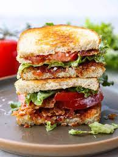

BLT sandwich recipe

Description
This recipe is for a epic BLT sandwich, featuring thick-cut bacon
brushed with a garlic and smoked paprika butter and heirloom tomatoes
tossed in olive oil, sugar, salt, and pepper. The sandwiches are assembled
on artisan bread and served with mayonnaise. This is a more complicated and
elevated version of the classic BLT sandwich.
Ingredients
- 1/2 pound thick-cut bacon
- 2 tablespoons unsalted butter
- 2 cloves garlic, minced
- 1/2 teaspoon smoked paprika
- 2 tablespoons olive oil
- 1/2 pound ripe heirloom tomatoes, sliced
- 1/2 teaspoon sugar
- 1/2 teaspoon salt
- 1/4 teaspoon freshly ground black pepper
- 4 lettuce leaves
- 4 slices artisan bread
- Mayonnaise
Steps
- Preheat the oven to 375°F. Line a baking sheet with parchment paper.
- In a small bowl, mix together the butter, garlic, and smoked paprika.
- Lay the bacon on the prepared baking sheet and brush both sides with
the garlic butter mixture.
- Bake the bacon in the preheated oven for 20-25 minutes, or until crisp
and golden brown. Transfer to a paper towel-lined plate to drain.
- In a medium bowl, toss the sliced tomatoes with the olive oil,
sugar, salt, and pepper.
- Toast the bread in the toaster or under the broiler until lightly golden.
- Assemble the sandwiches by spreading mayonnaise on one side of each slice
of bread. Arrange the bacon, tomato slices, and lettuce on top of the
mayonnaise. Top with the other slice of bread, mayonnaise-side down.
- Cut the sandwiches in half and serve immediately.